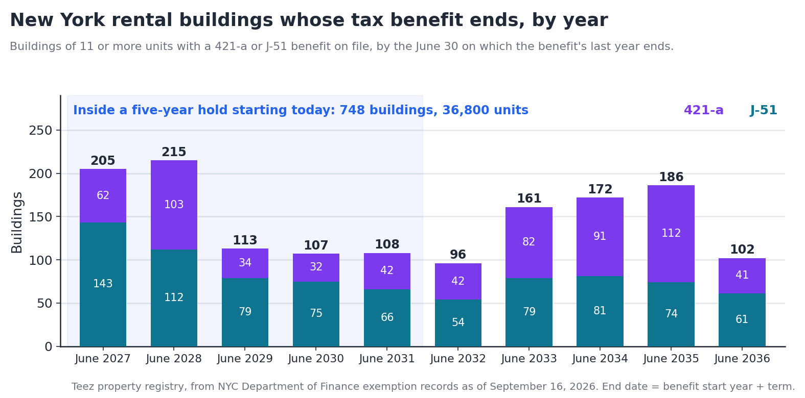
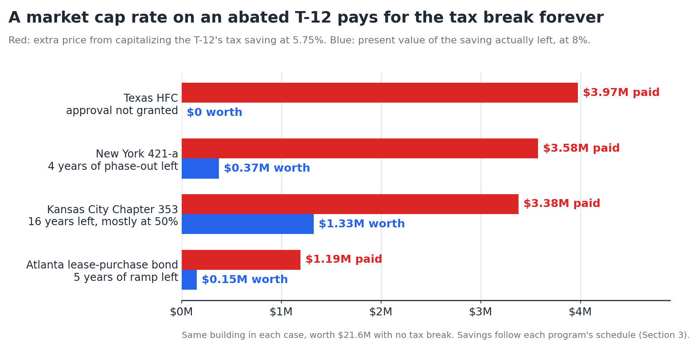

Tax Breaks That End Inside the Hold, and What a Market Cap Rate Pays for Them
Summary. Last week's note covered the tax step that comes from the sale. This one covers the step that comes from the calendar. A building with a tax abatement or exemption shows a subsidized tax bill on its T-12. If the break ends during the hold, the model that carries the T-12 line forward is wrong by the full amount of the subsidy, and a market cap rate applied to that T-12 pays for the subsidy as if it lasted forever.
This note sets out how four common programs end, counts what county records show, and runs one building through each. Findings:
![Line chart of annual property tax on one building from the seller's T-12 year through year six under four tax breaks: a Texas housing finance corporation exemption that is lost jumps from $0 to the full $235K bill in year one; New York 421-a climbs from $23K to the full bill by year five; an Atlanta lease-purchase bond climbs from $160K to the full bill by year six; Kansas City Chapter 353 steps from $34K to $121K in year two and stays at half. Dotted lines show the T-12 tax line grown 3%, which is what the model carries](../images/research/tax-abatement-tax-path-by-program.png)
A T-12 has one line for property tax and no column for why it is low. A building paying $23K on a $229K bill reports $206K more net operating income than the same building without the break, and the trailing statement gives no sign that the difference has an end date.
A cap rate treats income as permanent. At 5.75%, each dollar of NOI is worth $17.40. That is the right multiple for rent, which the next owner also collects. It is the wrong multiple for a tax saving with four years left. The saving should be valued as what it is: a stream of annual amounts, each known in advance, that stops.
The correct price has two parts. The building's value on its full tax bill, plus the present value of the tax saving that remains. A model that carries the T-12 tax line forward at 3% and applies a market cap rate does neither. It understates every year's tax during the hold and overstates the exit, because the next buyer underwrites the full bill.
Abatements differ in what they exempt, how long they run and, most of all, in the shape of the ending.
| Program | What the owner pays | How it ends | What changed recently |
|---|---|---|---|
| New York City 421-a | Tax on the pre-construction value only, for a post-construction term of 10, 15, 20 or 25 years; 35 years under the later Affordable New York version. | A phase-out. The 15- and 25-year terms lose 20 points a year over the last four years. The 10- and 20-year terms lose 20 points every two years over the last eight. | Closed to new projects in June 2022. Roebling counts up to 4,800 buildings and 66,000 units losing a benefit between 2023 and 2030, about 2,630 of them rentals. |
| Atlanta Lease-purchase bond | The development authority holds title for ten years. Taxes start at 50% of the normal bill. | A ramp. The taxable share rises five points a year, to the full bill in year 11. | Still being granted, and contested between the city and Fulton County. |
| Missouri Chapter 353 | For up to ten years, tax on the land only, at its assessed value from the year before acquisition. | A step, then a plateau. For up to fifteen more years the property is assessed at no more than 50% of true value. Full tax after year 25. | Kansas City's own practice is shorter and shallower than the statute allows; older plans run on the statutory terms. |
| Texas Housing finance corporation | Nothing. Property owned by an HFC is fully exempt. | A cliff. Under House Bill 21, a property outside the HFC's sponsoring city or county loses the exemption on January 1, 2027 unless the local government where it sits approves it by resolution. | Signed May 28, 2025. Yardi Matrix lists 335 such properties in the primary markets; one estimate puts the statewide count above 400 and the value at risk above $2 billion. A suit challenging the law was unresolved as of September. |
The ending is known years ahead. Every one of these schedules is fixed in a statute, a bond lease or a development plan on the day the benefit starts. Nothing about year four of a 421-a phase-out is a forecast. That is what makes the miss avoidable, and what separates it from a rent or cap rate assumption that turns out wrong.
Lenders write it into their rules. Fannie Mae's Multifamily Guide requires fully assessed real estate taxes in the underwriting for any abatement expiring within 36 months of origination. Where the abatement is shorter than the loan term, or phases out or expires within five years after maturity, the lender must consider a bifurcated loan, an amortization schedule that absorbs the loss of the abatement, or specific support in the refinance analysis.
We counted tax breaks on multifamily property in the Teez property registry, which is built from county and city records.

New York City: 748 buildings inside a five-year hold. Of 36,552 buildings with 11 or more units, 3,863 carry a 421-a or J-51 benefit: 2,040 under 421-a with 147,700 units and 1,823 under J-51 with 75,600 units. For 748 of them, with 36,800 units, the benefit's last year ends between June 2027 and June 2031. A 421-a phase-out starts four to eight years before that date, so more buildings than these are already stepping down.
Kansas City: one multifamily parcel in ten. In Jackson County, Missouri, 190 of 1,974 multifamily parcels carry an abatement code. Of those, 141 are Chapter 353: 90 in the first phase and 51 in the second.
Atlanta: the bond structure is visible in the land-use code. In Fulton County, 74 of 1,723 apartment parcels carry the county's economic-development code, which marks a development authority bond lease. Another 178 carry a partial-exemption code.
Only New York's record gives a date. The city publishes the benefit's start year and term, so the end can be computed. Jackson and Fulton Counties publish that an abatement exists, and in Jackson County which phase it is in, and no start or end date. The date is in the development plan or the bond lease. The county record is enough to know the question has to be asked. It is not always enough to answer it.
The building is the one used throughout this series. With no tax break it has $1.24M of NOI, a $229K tax bill, and is worth $21.6M at a 5.75% cap. We give it each of the four breaks in turn and assume a buyer acquires it at a point where the break ends inside a five-year hold. Everything else is the same building.
| Tax break | T-12 tax | Year 1 | Year 3 | Year 5 | Exit year |
|---|---|---|---|---|---|
| None (full bill) | $229K | $235K | $250K | $265K | $273K |
| Atlanta lease-purchase bond | $160K | $177K | $212K | $252K | $273K |
| New York 421-a | $23K | $66K | $160K | $265K | $273K |
| Kansas City Chapter 353 | $34K | $35K | $125K | $132K | $136K |
| Texas HFC, approval not granted | $0 | $235K | $250K | $265K | $273K |
The model's line never leaves the T-12. Grown at 3%, a $23K tax line is $27K in the exit year. The building owes $273K. In three of the four cases the exit-year NOI, the number the sale price is built on, carries the full bill.
In the 421-a case the tax bill takes every dollar of NOI growth for five years. Revenue and the other expenses grow 3% a year and the phase-out absorbs all of it. NOI in year five is the same as on the T-12.
The buyer pays a 5.75% cap on the T-12 NOI, borrows 59% at a 7.0% coupon sized to a 1.25x DSCR on the T-12 tax line, holds five years and sells at 6.00% on forward NOI. In the table, the price is that 5.75% cap on T-12 NOI; "paid for break" is the part of it that comes from the T-12's tax saving; "worth left" is the remaining saving valued at an 8% discount rate; the DSCR is the lowest year of the hold; the IRR is five-year levered, against 9.9% in the model.
| Tax break | Price | Paid for break | Worth left | Low DSCR | IRR |
|---|---|---|---|---|---|
| None | $21.6M | – | – | 1.25x | 9.9% |
| Atlanta bond | $22.8M | $1.19M | $0.15M | 1.24x | 7.4% |
| Kansas City 353 | $25.0M | $3.38M | $1.33M | 1.22x | 5.1% |
| New York 421-a | $25.2M | $3.58M | $0.37M | 1.21x | 2.2% |
| Texas HFC | $25.6M | $3.97M | $0 | 1.06x | 0.4% |

The overpayment is 5% to 16% of the price. The difference between what is paid for the break and what is left of it is $1.0M in the Atlanta case, $2.1M in Kansas City, $3.2M in New York and $4.0M in Texas. The model shows 9.9% in every case, because it is the same T-12, the same cap rate and the same growth rate.
A long abatement is worth something, and still not what the cap rate pays. Chapter 353's second phase runs fifteen years at half. That is real value, $1.33M here, and it is the one case where the next buyer also inherits a saving. It is 39% of what capitalizing the T-12 paid for it.
Coverage hides it. In three of the four cases year-one DSCR is 1.21x or better, because the break is still mostly in place when the loan is sized. A lender applying fully assessed taxes sizes $12.8M on every one of these, $0.7M to $2.4M less than the model's loan. The sponsor learns the abatement schedule from the lender.
Expiry is not only cost. In New York a 421-a building's units can leave rent stabilization when the benefit ends, depending on lease notices and regulatory agreements. As many as 40,700 units are in that position. The model above does not credit that, and a full underwriting should put both sides in.
The T-12 does not say abated. A low tax line looks like a low assessment. The statement carries the amount paid, not the program, the percentage or the year it ends.
The offering memo sells it as a feature. Where the abatement is mentioned, it is under investment highlights. The schedule, if it is there at all, is in an appendix or the data room.
The date lives somewhere else. In a city finance record, a development plan, a bond lease or a statute with a deadline. As Section 2 showed, even the county record often gives the program and not the date.
Each program has its own shape. A phase-out, a ramp, a step to a plateau, a cliff. A tax line with one growth rate cannot express any of them. Someone has to find the schedule and enter it by year, and at twenty to thirty minutes a deal for a first pass, as our back-office note documented, that is done after the bid range is set.
Teez reads the deal documents and looks the property up by address in its registry of county and city records. The tax break is one of the things that lookup returns.
It flags the exemption at first look. When the documents are parsed, Teez checks the property's record for a tax exemption or abatement and reports what is on file: 421-a, J-51, a Chapter 353 phase, a development authority bond lease, a total exemption under a public owner.
Where the record has an end date, it compares it to the hold. If the benefit ends inside the hold period, Teez says so and says what it means for the model: the exit-year tax expense should reflect the exemption lapsing, not the in-place tax line carried flat.
Where the record has no date, it says that too. The flag reads that no expiry is recorded and that the term has to be confirmed before the current tax line is carried forward. That turns an unknown into a diligence question on day one.
It reads the memo for the same thing. Before settling assumptions Teez searches the offering memo for property taxes and any pending change, and reports what the memo states for the sponsor to accept or override.
The schedule goes in one row, and the model re-runs in minutes. Property tax is its own line in the model. Entering the phase-out by year is an edit to that row in the sponsor's own Excel template, and coverage, cash flow and the exit recompute from it.
Every number in this note was knowable on the day the deal arrived. The work is in finding out that there is a schedule to look for, on every deal, before the bid. That only happens when the first pass takes minutes.
Teez takes an OM, T-12 and rent roll to a full model in minutes and, from the property's address, flags any tax exemption or abatement on the county record with its end date where the record has one, in the sponsor's own Excel template, so an expiring tax break is on the table at first look instead of at lender sizing. More at teez.ai.